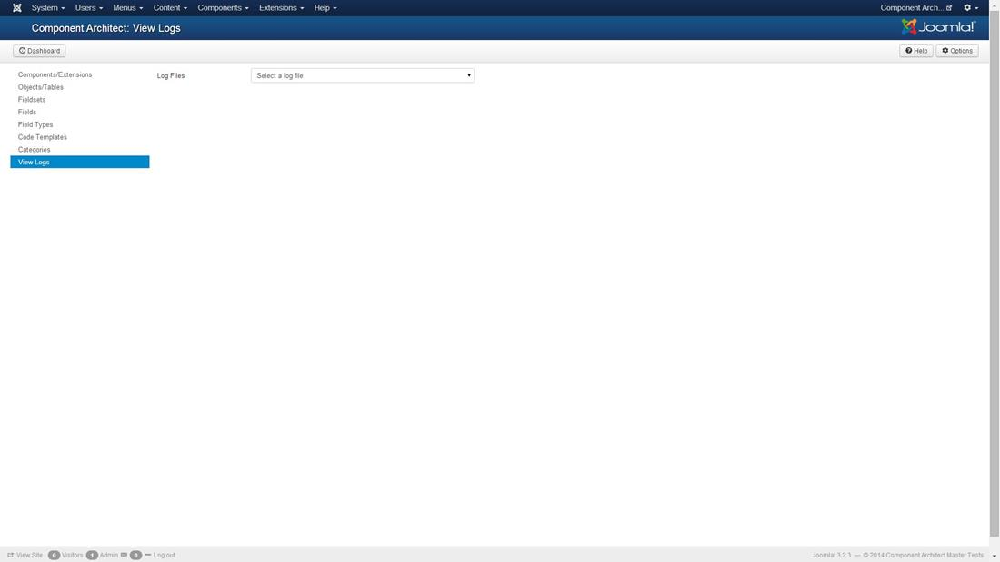
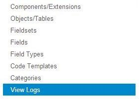
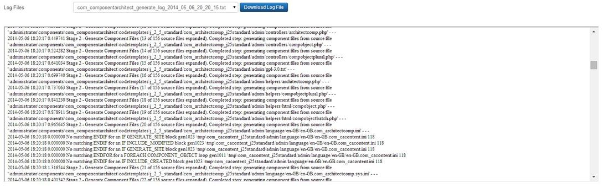

The administrator view provides access to the log files which may have been created (if specified to do so) during the Component Architect component generation process.
You can use the following links to jump to a section of this help page:
Screenshot

Dashboard
Show the Component Architect dashboard which has links to all the main functionality and component update options.
Options
Show a dialog in which to edit the Global preferences and view parameter settings.
Help
Link to display the Help system.
Component Architect Links

Links
The following links are provided to the Managers within Component Architect
Components/Extensions
Objects/Tables
Fieldsets
Fields
Field Types
Code Templates
Categories
View Logs
Log Details

Log Files
Select a log file from the drop down list of generated log files.
Field Type: List
Log Contents
The contents of the selected log file.
Field Type: Text Area
Download Log File
Button to download to your PC the selected log file.